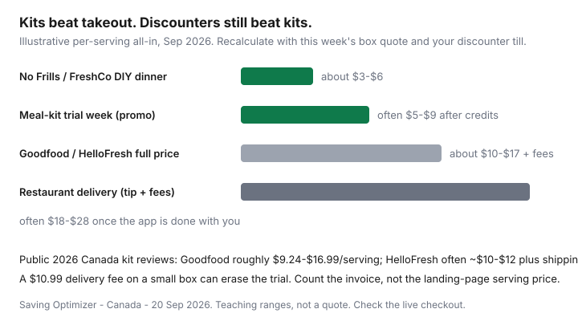

Food & Groceries · Canada
Are Canadian meal-kit trials actually cheaper than groceries? A decision framework
Meal-kit ads in Canada sound like grocery savings: “cheaper than takeout,” “no waste,” “from $9 a serving.” For a household that already shops No Frills or FreshCo from the flyer, a full-price kit is usually a convenience premium — closer to a Tuesday restaurant you assemble yourself than to a discounter cart.
The honest use is a time-boxed trial: learn two or three recipes, maybe survive a brutal month, then exit. This framework compares true cost per serving after fees, when kits beat delivery apps, portal stacking, waste, and a cancel plan. It is not a brand bake-off and it is not nutrition advice.
Disclosure: Goodfood, HelloFresh, Chefs Plate, and similar trials, plus cashback portals and grocery gift cards, are offer types. Saving Optimizer may earn a commission if we later add partner links. We do not currently claim those partnerships. Landing-page serving prices are marketing — use the invoice.
Key takeaways
- Full-price Canadian kits often land around $10–$17 a serving before you count every fee. Discounter DIY is often $3–$6.
- Kits routinely beat Uber Eats. They rarely beat a Flipp protein week.
- Use a trial for recipe discovery and terrible weeks — then cook those recipes from groceries.
- Portal Cash Back and first-box credits can make week one look cheap. Week five is the real price.
- Put the skip/cancel deadline on a calendar the day you subscribe.
True cost per serving after fees and shipping
Write it down: (box subtotal + delivery + rural or frozen-box fees + tax on fees − credits) ÷ servings you actually ate. Do not divide the landing-page “from $9.24” by a fantasy household.
Public 2026 Canada roundups (meal-kit review sites; Goodfood checkout help) have shown:
- Goodfood: roughly $9.24–$16.99 per serving depending on plan and headcount. Some pages advertise free shipping; Goodfood’s own help has also listed a $10.99 delivery fee on orders, a rural add-on around $3.99, and frozen-box fees. Believe the postal-code checkout.
- HelloFresh: often cited around $10–$12 per serving plus shipping in the $10–$11 band on some North American plans — confirm the Canadian checkout. Lowest-cost boxes can still clear $60+ a week for two meals for two people before you blink.
- Chefs Plate (HelloFresh family) is often the cheaper sibling in Canadian comparisons — still not No Frills.

| Dinner source | Typical all-in per serving | Job it actually does |
|---|---|---|
| No Frills / FreshCo flyer cook | about $3–$6 | Default grocery system |
| Kit trial week | often $5–$9 after credits | Recipe class + fewer decisions |
| Kit at full price | about $10–$17 + fees | Convenience subscription |
| App delivery dinner | often $18–$28 | Restaurant, not groceries |
When kits beat takeout (but not discounter cooking)
If the alternative is a $55 delivered pad thai for two, a kit box is cheaper and you practiced cooking. If the alternative is thighs from the Thursday flyer and frozen veg, the kit is a premium. Name the alternative honestly. Households that already run budget meal prep should treat kits as a vacation from the system, not a replacement.
Singles: portioning is the silent fee. A two-serving bag you cannot store becomes waste or a second identical dinner you did not want.
Using trials strategically for recipe discovery
- Pick one cuisine you will actually repeat (sheet-pan chicken, a dal, a stir-fry sauce).
- Photograph the recipe cards you liked. Next month, buy those spices and proteins on Flipp.
- Skip any week you already have a fridge plan. Skipping is the product.
- Stop after two to four boxes unless the invoice still beats your real alternative.
Student and newcomer trials are a first-month crutch, not a semester meal plan — pair with the residence grocery strategy if storage is a mini-fridge.
Portal cashback and promo stacking
Rakuten.ca periodically lists Goodfood and similar merchants. Scene+ Rakuten may add a member bonus. Stack, in order: official first-box credit → portal click → a card that earns on that merchant → pay in full. Unlisted influencer codes can void Cash Back. Details in Rakuten and Scene+ portals.
Grocery gift cards are usually the wrong tool for a kit checkout. Do not prefund $300 of Goodfood plastic to chase 2%.
Food waste comparison vs self-planned meals
Kits portion ingredients. That can beat a bunch of cilantro you bought for one taco night. They also produce cardboard and a box you forgot to pause while you were away. Self-planned meals waste more produce when you skip the fridge audit; they waste less when you run FIFO and leftover night.
If your waste log is already tight, a kit’s waste pitch is marketing. If your waste log is spinach every week, fix the list first — a subscription will not teach you FIFO.
Exit plan so subscriptions do not linger
Day-one calendar: the skip cutoff printed in the app (often 4–6 days before delivery). Put “skip or cancel meal kit” on that weekday for the next eight weeks. Screenshot the cancel confirmation. Watch one more invoice.
Canadian kit companies generally advertise no cancellation fee. The fee is inertia. If a box ships because you were busy, that is a $70 lesson, not a reason to keep the subscription “so it was not wasted.”
Return to the weekly grocery system. The kit’s only leftover should be two recipes you can cook from a discounter cooler.
Sources & date stamps
- Canadian meal-kit review roundups, 2026: Goodfood roughly $9.24–$16.99/serving; HelloFresh often ~$9.99–$12/serving in comparison tables — verify live checkout.
- Goodfood help/checkout notes: delivery fee examples around $10.99, rural add-on, frozen-box fee (reviewed Sep 2026; postal-code gated).
- Rakuten.ca merchant tiles for kit brands and Scene+ portal rules — perishable rates.
- Our discounter protein and meal-prep guides for the $3–$6 DIY comparison band.
Frequently asked questions
Are Canadian meal kits cheaper than groceries?
At full price, usually no versus a discounter flyer week. Public 2026 Canada reviews often put Goodfood around $9-$17 per serving and HelloFresh around $10-$12 plus shipping on some plans. A No Frills or FreshCo dinner from sale protein is often $3-$6 a serving. Kits can beat restaurant delivery.
When is a meal-kit trial worth it?
When you would have ordered takeout, when you need three new recipes you will repeat from groceries, or when a first-box credit plus portal Cash Back lands near discounter math for a few weeks. It is not worth it as a forever subscription if you already cook from flyers.
Do meal kits reduce food waste?
They can, because portions are counted. They can also waste a box you forgot to skip, plus packaging. A planned leftover night at home still wins if you already run a fridge audit.
Can I stack Rakuten or Scene+ on Goodfood or HelloFresh?
Sometimes. Check the live Rakuten.ca tile and any Scene+ bonus. Unlisted promo codes can void Cash Back. Do not stack a student trial, a portal, and a second coupon tab and assume all three will pay.
How do I cancel so the subscription does not linger?
Set a calendar reminder for the skip/cancel deadline printed in the app — often several days before the next box. Cancel in the account settings, screenshot the confirmation, and watch one more billing cycle. Do not rely on ignoring emails.